Câu 1: Cho đồ thị hàm số với x ∈ [- π/2 ; 3π/2] như hình vẽ. Tìm khoảng đồng biến của hàm số y = sinx với x ∈ [- π/2 ; 3π/2]?
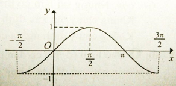
- (- π/2; π)
- (-1;1)
- (0;π)
- (- π/2; π/2)
Trên khoảng (-π/2; π/2) đồ thị hàm số đi lên từ trái sang phải. Trên khoảng (π/2;3π/2) đồ thị hàm số đi xuống từ trái sang phải. Do đó hàm số đồng biến trên khoảng (-π/2; π/2)
Câu 2: Cho đồ thị hàm số y = -x3 như hình vẽ. Hàm số y = -x3 nghịch biến trên khoảng:
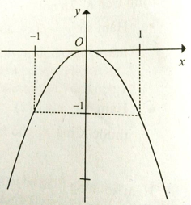
- (-1;0)
- (0;+∞)
- (-∞;0)
- (-1;1)
Trên khoảng (0; +∞) đồ thị hàm số đi xuống từ trái sang phải. Do đó hàm số nghịch biến trên khoảng (0;+∞)
Câu 3: Cho đồ thị hàm số y = -2/x như hình vẽ. Hàm số y = -2/x đồng biến trên:
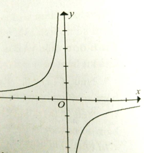
- (-∞;0)
- (-∞;0) ∪ (0;+∞)
- R
- (-∞;0) và (0;+∞)
Đồ thị hàm số đi lên từ trái sang phải trên hai khoảng (-∞;0) và (0;+∞)
Câu 4: Cho hàm số f(x) có đạo hàm f'(x) = √x(x-1)(x+2)^2. Kết luận nào sau đây là đúng?
- Hàm số f(x) nghịch biến trên khoảng (-∞;1).
- Hàm số f(x) đồng biến trên các khoảng (-∞;0) và (1;+∞).
- Hàm số f(x) đồng biến trên các khoảng và (1;+∞).
- Hàm số f(x) đồng biến trên các khoảng (1;+∞).
Điều kiện: x>0. Bảng xét dấu :
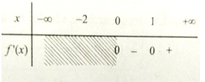
Vậy f(x) đồng biến trên khoảng (1;+∞) và nghịch biến trên khoảng (0;1)
Câu 5: Khoảng nghịch biến của hàm số y = x3/3 - 2x2 + 3x + 5 là:
- (1;3)
- .(-∞; 1) ∪ (3; +∞)
- (-∞; 1) và (3; +∞)
- (1;+∞)
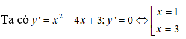 :
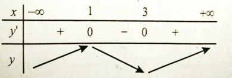
Vậy hàm số nghịch biến trên khoảng (1;3).
Câu 6: Cho hàm số y = x4 - 2x2 + 3 . Kết luận nào sau đây đúng?
- Hàm số nghịch biến trên khoảng (-∞; -1) ∩ (0; 1)
- Hàm số đồng biến trên khoảng (-1; 0) ∪ (1; +∞)
- Hàm số nghịch biến trên khoảng (-∞; -1) ∪ (0; 1)
- Hàm số đồng biến trên các khoảng (-1; 0) và (1; +∞)
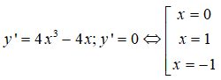
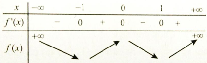
Từ đó ta có: Hàm số đồng biến trên các khoảng (-1; 0) và (1; +∞) , nghịch biến trên các khoảng (-∞; -1) và (0; 1) .
Câu 7: Cho hàm số y = sin2x - 2x. Hàm số này:
- Luôn đồng biến trên R
- Chỉ đồng biến trên khoảng (0; +∞)
- Chỉ nghịch biến trên (-∞; -1)
- Luôn nghịch biến trên R
Tập xác định D = R. Ta có : y' = 2.cos2x - 2 = 2(cos2x - 1) ≤ 0; ∀ x (vì -1 ≤ cos2x ≤ 1)
Vậy hàm số luôn nghịch biến trên R
Câu 8: Khoảng nghịch biến của hàm số y = x4 - 2x2 - 1 là:
- (-∞; -1) và (0; 1)
- (-∞; 0) và (1; +∞)
- (-∞; -1) ∪ (0; 1)
- (0;1)
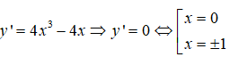
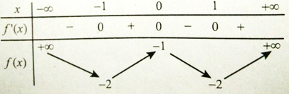
Hàm số nghịch biến trên các khoảng (-∞; -1) và (0; 1)
Câu 9: Tìm khoảng đồng biến của hàm số f(x)= x + (cosx)^2
- R\{0}
- (-∞; +∞)
- (-1; 1)
- (0; π)
f'(x) = 1 - 2sinxcosx = sin2x + cos2x - 2.sinx.cosx = (sinx - cosx)2 ≥ 0 ∀x ∈ R. Hàm số đồng biến trên khoảng (-∞; +∞)
Câu 10: Cho đồ thị hàm số có dạng như hình vẽ. Hàm số đồng biến trên:
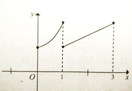
- (0;1)
- (1;3)
- (0; 1) ∪ (1; 3)
- (0;1) và (1;3).
Trên khoảng (0; 1) đồ thị hàm số đi lên từ trái qua phải. Trên khoảng (1; 3) đồ thị hàm số đi lên từ trái qua phải. Đồ thị hàm số bị gián đoạn tại x = 1. Do đó hàm số đồng biến trên từng khoảng (0; 1) và (1; 3)